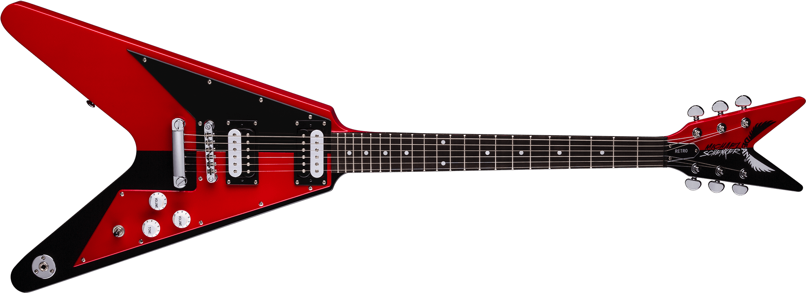
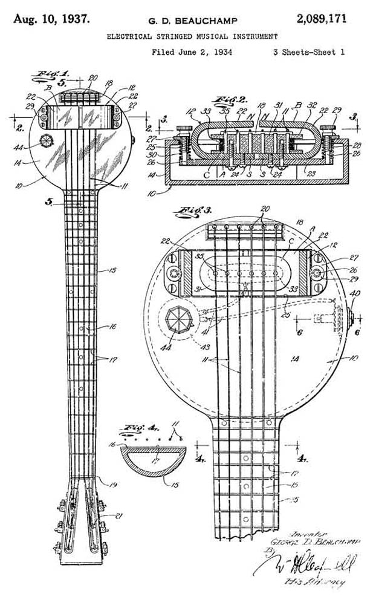
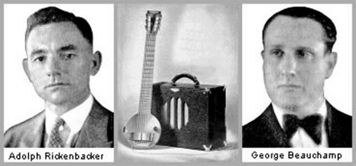
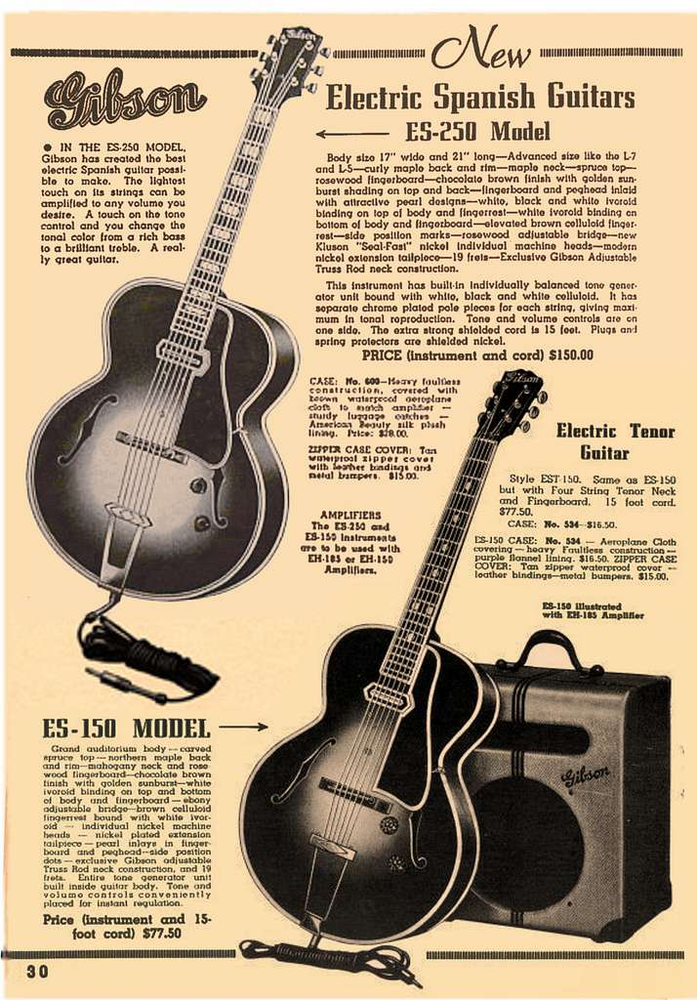
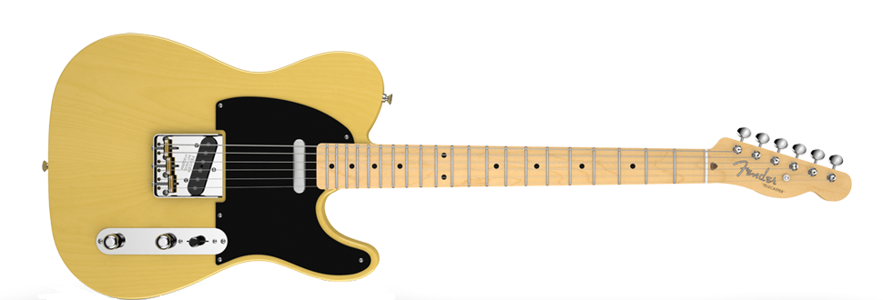

ЭЛЕКТРОГИТАРА: ИСТОРИЯ И СОВРЕМЕННОСТЬ
Электрическая гитара, разработанная в начале XX века, стала одним из самых важных инструментов в музыке. Современная электрическая гитара происходит от акустической гитары. Несмотря на то, что конструкции современных электрогитар часто отличаются от своих акустических предшественников, все гитары построены с использованием одного и того же простого шаблона. Самое существенное отличие состоит в том, что акустические гитары полые, а электрогитары цельные.
В течение многих лет акустическая гитара ограничивалась вспомогательной ролью в крупных музыкальных ансамблях из-за ее негромкого звука. Таким образом, главной мотивацией, побудившей создать электрогитару, было желание музыкантов увеличить громкость. Предшественниками современной электрогитары были усиленные акустические гитары, грубо модифицированные изобретателями, которые прикрепляли провода, магниты и другие "примочки". Однако по мере того, как технология начала развиваться в 1930-х годах, более новые версии стали более сложными, а электрогитара стала сольным инструментом, который помог расширить музыкальные стили.
История электрогитары относит нас к 1930 году, когда будучи уволенным из национальной компании струнных инструментов (National String Instrument Company) Джордж Бишамп (George Beauchamp) начал работу по поиску новых методов увеличения громкости струнных инструментов. Популярным решением такой проблемы было следующее: Проводник, колеблющийся в поле, создаваемом одним или несколькими постоянными магнитами производит изменение в магнитном поле, которое в свою очередь производит переменный ток в проволоке намотанной вокруг этих магнитов. Сила электрического тока, пропорциональна величине колебаний проводника в магнитном поле. Такой же принцип лежит в основе электромоторов, генераторов, игл фонографа и акустических динамиков.
Уже в 1925 году Бишамп экспериментировал с использованием иголок от фонографа на электрогитаре из одной струны и рассчитывал, что разработанное устройство может «снимать» вибрации с каждой отдельной струны, и преобразовывать эти вибрации в эквивалент электрических колебаний. Потом их можно было бы усилить одним из ламповых усилителей, которые широко применялись в радиотехнике того времени. После нескольких месяцев проб и ошибок Бишамп совместно с Полом Бартом (Paul Barth) разработали действующий звукосниматель (pickup) из двух подковообразных магнитов и шести магнитоводах. Каждая струна проходила над отдельным магнитоводом, колеблясь в индивидуальном магнитном поле. Для обмотки катушки была использован мотор от стиральной машины Бишампа.
Убедившись в работе устройства, Бишамп связался с Гарри Уотсоном (Harry Watson), управляющим завода National String Instrument Company и высококвалифицированным мастером. Он, при помощи ручных инструментов, всего за несколько часов вырезал на кухонном столе Бишампа гриф и корпус первой в мире электрогитары. Ее назвали «сковорода» (Frying Pan).
Готовый прототип Бишамп представил Адольфу Рикенбакеру (Adolph Rickenbacher). Рикенбакер, являющийся родственником героя первой мировой войны, пилота-аса Эдди Рикенбакера (Eddie Rickenbacker), владел производственной компанией, занимающейся выпуском металлических корпусов, для резонаторов. Используя влияние Рикенбакера и его финансовую поддержку, они основали компанию, назвав ее «Instruments Rickenbackers». Компания немедленно начала производство «сковородок», которые очень быстро обрели популярность и направили компанию Рикенбакера на славный путь первого в истории производителя электрогитар.
Еще одним создателем электрогитары в «испанском стиле» был Ллойд Лоар, экспериментатор. Его дизайн был прямым предшественником современной электрогитары. Лоар вдохновил Орвиля Гибсона, другого изобретателя, на создание модели электрогитары ES-150, которая произвела революцию в мире музыкальных инструментов. Окончательная версия была построена Уолтером Фуллером. Хотя гитара мгновенно завоевала успех, у нее были некоторые недостатки. Вибрации в полом коробе при усилении создавали искажения звука. Это привело к тому, что Les Paul, гитарист и изобретатель, разработал цельную электрогитару в 1940 году. Инновация Paul, которая называлась «Лог», включала в себя установку струн на массивном блоке сосны, чтобы свести к минимуму вибрации. «Лог» состоял из двух основных магнитных датчиков, установленных на куске сосны размером 10,2х10,2 см.
Руководство Gibson новый инструмент восприняло прохладно, убежденное в том, что покупатели ее не примут. Все предыдущие попытки представить публике гитару без резонирующего корпуса были не успешны, но не смотря на это, один человек по имени Лео Фендер (Leo Fender) был твердо убежден, что будущее рынка стоит за гитарами имеющими сплошной корпус.
Калифорнийский изобретатель, Лео Фендер владел собственной радио-мастерской, в которой создал один из первых прототипов гитары со сплошным корпусом из дуба, который в 1943 году сдал в аренду музыкантам в обмен на предложения по совершенствованию конструкции. 1949 год стал поворотным для истории электрогитар, когда Лео Фендер выпустил продукт, ставший одной из самых успешных гитар со сплошным корпусом. Esquire, позднее переименованный в Broadcaster, в конце концов превратившийся в Telecaster - имел все преимущества гитары Лэса Пола, отсутствие эффекта обратной связи, отсутствие нежелательных гармоник, долгий сустейн (длительность звучания струны), но при этом он нашел немного поклонников среди джаз-гитаристов. Джаз гитаристы предпочитали более мягкий, округлый звук, скорее акустический, как у ES-150. Несмотря на это Telecaster пользовался бешеной популярностью среди кантри, блюз, а позднее в 1950-x и 1960-x годах, рок’н’ролл музыкантов.
Обе фирмы, Gibson и Fender представили футуристические дизайны инструментов. Gibson SG (solid guitar) и Fender Stratocaster стали стандартными гитарами для рок-артистов в 60-е годы. Свою пиковую популярность набрал Stratocaster, после того как стал любимой гитарой Джими Хендрикса (Jimi Hendrix).
И по сей день, большинство проданных гитар во всем мире составляет продукция фирмы Fender и Gibson. История гитары продолжается, как и производство оригинального Gibson Les Paul